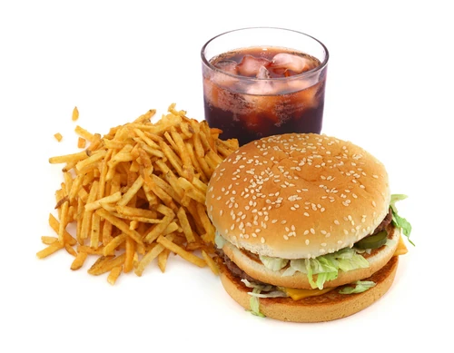

We Are Fast food Eaters! WE LIVE FOR FASTFOOD! Life at music college means high-calorie food is our only hope for survival! We need plenty of calories to make it through this freezing city,and we need rich, hearty food to fill our spiritual needs. Nothing is more uplifting than warm, crispy fries, an ice-cold soda, and a juicy, filling burger.

HI! I am burger eater, I am in charge of eating burgers, I love proteins, especially beef, it can provide all the energy for me to survive Berklee college of music! I also like onions and pickles, I guess it’s healthy.
Hey! I am a fries eater, and I liked them very salted and with a lot of sauce, either ketchup, honey mustard or mayo but no buffalo ranch. I eat French fries everyday even tho my mom says not to.
Soda Drinker is a certified soda drinker from Singapore. Being from a country where all sodas are labelled “less sugar” by default, Soda Drinker is probably the least qualified to be the go-to soda drinker. Her favourite sodas include Sprite (less sugar), Barq’s Root Beer (less sugar), and ginger ale. As the Fast Food Eaters’ resident soda connoisseur, Soda Drinker will likely die of diabetes.